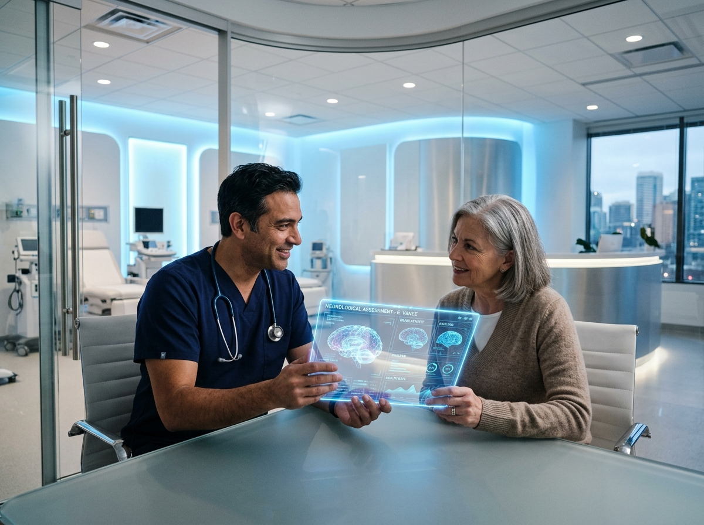

Patients Treated
Clinical Excellence
Verified Patient Rating
Board Certified Specialist
From advanced cardiac risk mapping to restorative longevity protocols, every treatment plan is tailored with evidence-based rigor and empathetic care.
Early plaque detection, hypertension management, arrhythmia mapping, and non-invasive hemodynamic monitoring.
Proactive health optimization, metabolic profiling, and personalized anti-aging interventions based on biomarkers.
Instant on-site ultra-high resolution ultrasonography, arterial stiffness testing, and rapid blood diagnostics.
Multi-organ evaluation for busy professionals seeking a complete health baseline in a streamlined single visit.
Encrypted HD virtual consultations paired with cellular-connected continuous vitals monitoring from home.
Direct rapid evaluation for acute symptoms such as palpitations, sudden blood pressure spikes, or chest tightness.
Dr. Elena Vance is a double board-certified physician in Cardiovascular Disease and Internal Medicine. After graduating Magna Cum Laude from Harvard Medical School and completing her fellowship at The Johns Hopkins Hospital, she dedicated her career to reimagining doctor-patient relationships.
At Avalon, every patient receives unhurried, deeply attentive care backed by the world's most sophisticated diagnostic imaging. Dr. Vance believes in identifying subtle micro-vascular and metabolic imbalances years before they become clinical symptoms.
Doctor of Medicine (MD), Honors
Cardiology & Vascular Fellowship
Fellow of the American College of Cardiology
Recognized Top Specialist 2022–2026

Say goodbye to sterile, stressful waiting rooms. Avalon Clinic is purposefully crafted with tranquil architectural acoustics, panoramic natural lighting, and private consultation suites.
Direct entry into your personal clinical suite without crowded communal waiting rooms.
Instant real-time 4D cardiac imaging displayed on high-clarity patient monitors as we examine.
Key cardiac, lipid, and metabolic biomarker results in under 20 minutes during your visit.
Click on any symptom or health goal below to see Dr. Vance's clinical recommendation and consultation protocol.
Priority consultation with Dr. Vance. ECG & Echocardiogram evaluation advised within 24-48 hours. (Approx. 45 mins)
Real experiences from patients whose health and longevity have been transformed under Dr. Vance's guidance.
"Dr. Vance identified a subtle arterial constriction during a routine preventive checkup that two other doctors missed. Her calm demeanor, thorough diagnostics, and precision treatment plan literally saved my active life."
"The clinic feels like a modern sanctuary rather than an intimidating doctor’s office. Dr. Vance spent 60 minutes explaining my lab results line by line. I have never felt more heard and cared for by a medical professional."
"From the zero-wait check-in to same-day ultrasound results, Avalon sets an entirely new benchmark for medicine. Dr. Vance’s cardiovascular protocol helped normalize my blood pressure without heavy medication."
Whether you need a specialized cardiovascular assessment, a preventive physical, or an urgent consultation, booking is seamless.
Fast confirmation within 15 minutes during clinical hours.
Everything you need to know about your consultation, insurance coverage, and clinic protocols.
Your first visit is typically 45 to 60 minutes long. Dr. Vance conducts a comprehensive medical history review, physical examination, resting 12-lead ECG, and personalized discussion of your health goals without rushing.
Yes. We accept most major PPO insurances and Medicare. For specialized executive longevity panels and non-covered tests, our staff provides clear upfront pricing and full reimbursement superbills.
In-house echocardiograms, vascular ultrasounds, and rapid lipid/metabolic blood panels are reviewed with you directly during your appointment. Advanced genetic or specialized panels take 3 to 5 business days.
Yes, Dr. Vance offers encrypted, high-definition virtual visits for medical second opinions, preventive health optimization, and ongoing routine care for qualifying patients.
You can click the "Paste Spline Link" button located in the Hero section or open js/main.js and paste your Spline URL directly into the USER_SPLINE_URL variable. The site immediately renders your 3D Spline model in full interactive glory!